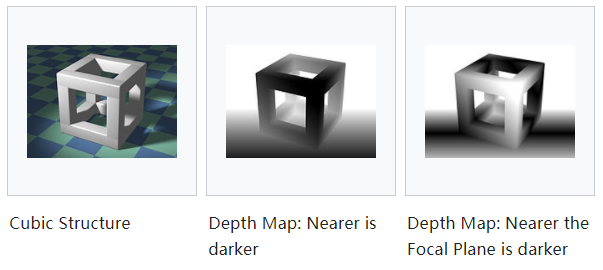
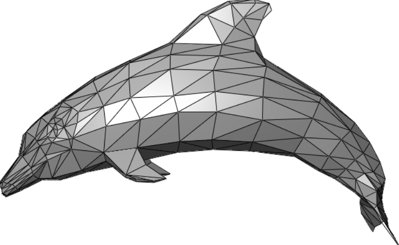
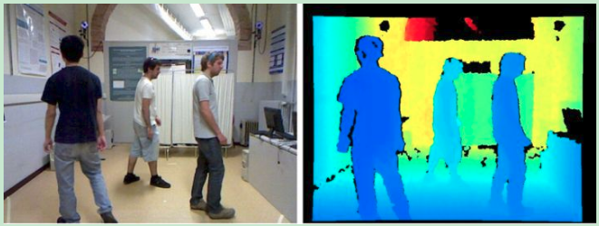
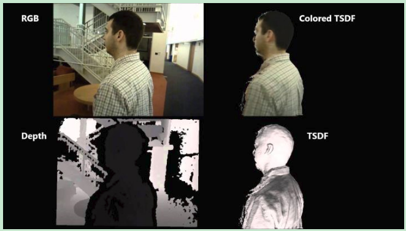
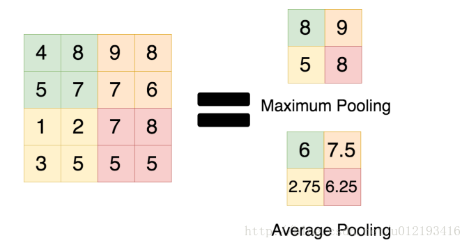

深度图

Depth map 深度图是一张2D图片，每个像素都记录了从视点到遮挡物表面（遮挡物就是阴影生成物体）的距离，这些像素对应的顶点对于观察者来说是“可见的”。
Depth map中像素点记录的深度值为lenth1；然后从视点出现，计算物体顶点v到视点的距离，记为lenth2；比较二者大小，来确定“v”是否被遮挡。该术语的同义词有depth buffer，Z-buffer，Z-buffering和Z-depth。这里的“Z”是相对于相机（即视点）视图中心轴而言的，也就是相机的z轴线，而不是场景的绝对坐标中的z轴线。
用途
- 模拟在一个场景中的密度均匀的半透明介质效果-如雾，烟或大量的水
- 模拟场景表面的深度域（depth of field (DOF)）
- 可用于高效的变形体碰撞检测
体素（立体像素）
体素或立体像素（voxel），是体积像素（volume pixel）的简称。概念上类似二维空间的最小单位——像素，像素用在二维电脑图像的视频数据上。体积像素一如其名，是数字数据于三维空间分区上的最小单位，应用于三维成像、科学数据与医学视频等领域。有些真正的三维显示器运用体素来描述他们的分辨率，举例说：可以显示512×512×512体素的显示器。
如同像素，体素本身并不含有空间中位置的数据（即他们的坐标），然而却可以从他们相对于其他体素的位置推敲，意即他们在构成单一张体积视频的数据结构中的位置。
网格
多边形网络（Polygon mesh）是三维计算机图形学中表示多面体形状的顶点与多边形的集合,它也叫作非结构网格。
这些网格通常由三角形、四边形或者其他的简单凸多边形组成，这样可以简化渲染过程。但是，网格也可以包括带有空洞的普通多边形组成的物体。
非结构网格内部表示的例子有：
- 一组顶点的简单列表，它们带有表示那些顶点组成多边形的信息列表；另外可能带有表示空洞的附加信息
- 顶点列表 + 边界列表（一对索引信息）+ 连接边界的多边形列表
- 翼边数据结构
根据应用程序的不同所选择的数据结构也有所不同：三角形的处理要比普通多边形的处理更加简单，尤其是在计算几何中更是这样。对于优化的算法，可能需要快速访问边线或者相邻表面这样的拓扑信息，这样就需要如翼边表示这样更加复杂的结构。

点云（维基百科）
点云（point cloud）是指通过3D扫描器所取得至资料形式。
扫描资料以点的型式记录，每一个点包含有三维座标，有些可能含有色彩资讯（R,G,B）或物体反射面强度。
点云数据除了具有几何位置以外，还有强度（Intensity）信息，强度信息的获取是激光扫描仪接受装置采集到的回波强度，此强度信息与目标的表面材质、粗糙度、入射角方向，以及仪器的发射能量，激光波长有关。点云也是逆向工程中通过仪器测量外表的点数据集合。
在电脑动画领域，皮克斯的玩具总动员3使用了点云技术。
点云应用深度学习面临的挑战：
非结构化数据，不变性排列，点云数据量上的变化(不同传感器上点云的数量变化很大)
点云数据方面的挑战：
- 缺少数据：扫描的模型通常被遮挡，部分数据丢失
- 噪音：所有传感器都是嘈杂的。有几种类型的噪声，包括点云扰动和异常值。这意味着一个点有一定的概率位于它被采样的地方(扰动)附近的某一半径范围内，或者它可能出现在空间的任意位置(异常值)
- 旋转：一辆车向左转，同一辆车向右转，会有不同的点云代表同一辆车
在点云上直接用深度学习的方法是将数据转换成体积表示，比如体素网格，然后就可以用3D滤波器来训练CNN，但是体积数据会变得非常大，3D CNN处理会非常慢，所以需要妥协到较低的分辨率，就会带来量化误差的代价。
针对无序点云数据的深度学习方法研究进展缓慢，主要有三个方面：
- 点云具有无序性
- 点云具有稀疏性 —— 在KITTI数据集中，如果把原始的激光雷达点云投影到对应的彩色图像上，大概只有3%的像素才有对应的雷达点。这种极强的稀疏性让基于点云的高层语义感知变得尤其困难。
- 点云信息量有限 —— 点云的数据结构就是一些三维空间的点坐标构成的点集，本质是对三维世界几何形状的低分辨率重采样，因此只能提供片面的几何信息
举例说明
iphoneX 3D结构光双摄
用的是PrimeSense的结构光深度重建方案(Depth),和普通的彩色RGB不同，深度摄像头输出的时RGBD图像，多了一个深度通道，深度图像看起来是这样的：

由深度图可以得到点云，进而得到网格（mesh）
效果如下：

- 3D 重建后的人脸，比 2D人脸多了很多信息，识别显然会更准确
- 由于结构光的特性，每一帧数据都能重建出完整的 3D 模型，速度也非常快，才能适应像手机解锁这样的应用
- 结构光方案因为自带光源，所以天黑的时候也能用
最大池化 max pooling
池化操作时在卷积神经网络中经常采用过的一个基本操作，一般在卷积层后面都会接一个池化操作，但是近些年比较主流的ImageNet上的分类算法模型都是使用的max-pooling，很少使用average-pooling，这对我们平时设计模型时确实有比较重要的参考作用，但是原因在哪里呢？
通常来讲，max-pooling的效果更好，虽然max-pooling和average-pooling都对数据做了下采样，但是max-pooling感觉更像是做了特征选择，选出了分类辨识度更好的特征，提供了非线性，根据相关理论，特征提取的误差主要来自两个方面：
- 邻域大小受限造成的估计值方差增大
- 卷积层参数误差造成估计均值的偏移
一般来说，average-pooling能减小第一种误差，更多的保留图像的背景信息，max-pooling能减小第二种误差，更多的保留纹理信息。average-pooling更强调对整体特征信息进行一层下采样，在减少参数维度的贡献上更大一点，更多的体现在信息的完整传递这个维度上，在一个很大很有代表性的模型中，比如说DenseNet中的模块之间的连接大多采用average-pooling，在减少维度的同时，更有利信息传递到下一个模块进行特征提取。
但是average-pooling在全局平均池化操作中应用也比较广，在ResNet和Inception结构中最后一层都使用了平均池化。有的时候在模型接近分类器的末端使用全局平均池化还可以代替Flatten操作，使输入数据变成一位向量。

max-pooling和average-pooling的使用性能对于我们设计卷积网络还是很有用的，虽然池化操作对于整体精度提升效果也不大，但是在减参，控制过拟合以及提高模型性能，节约计算力上的作用还是很明显的，所以池化操作时卷积设计上不可缺少的一个操作。